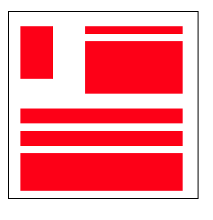

Proposito del Sitio
Ver la evolucion que tiene este estudiante a medida que pasa el curso SITIOS WEB,
La idea es evidenciar en estas paginas todo lo aprendido en cada corte de la materia.
Como proucto final resaltar la importancia de explorar en este caso una lenguaje de
programacion tan versatil como lo es HTML.
Etiquetas semánticas
Pasa hablar de etiquetas semánticas, no hace falta de explicarlo en términos técnico,
Hace alegoria al significado que puede tener cada etiqueta y estas a su vez para que puede ser utilizado.
Las etiquetas son la base para programar en HTML, ya que nos proporcionan la personalizacion que puede
tener una pagina web, y el enfoque que se quiere presentar en cada sitio.

-E.C. (2021). Que es la semantica? concepto. https://concepto.de/semantica/
CSS Grid
CSS Grind es la evolucion de la forma de trabajar con HTML, al usar CSS grind, hace que la pagina web
sea mucho mas estrcuturada y llamativa al consumidor final. Ademas CSS hace que el aspecto del sitio
Sea mucho mas organizado y dinamico en mostrar toda la informacion que se quiere proyectar.

CSS grid: diseño con función inteligente. (2020, 7 octubre). IONOS Digitalguide. https://www.ionos.mx/digitalguide/paginas-web/creacion-de-paginas-web/css-grid-layout/
 --
--